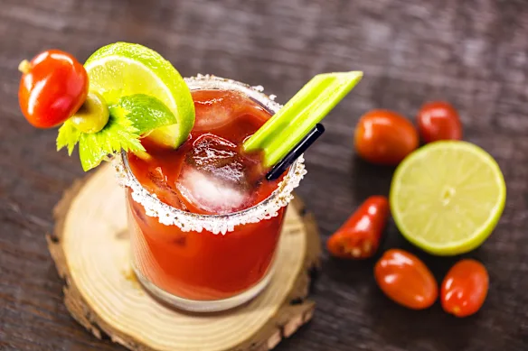
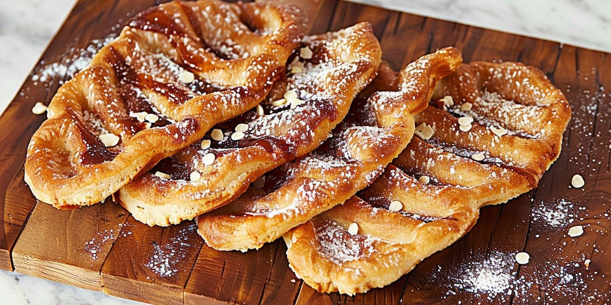
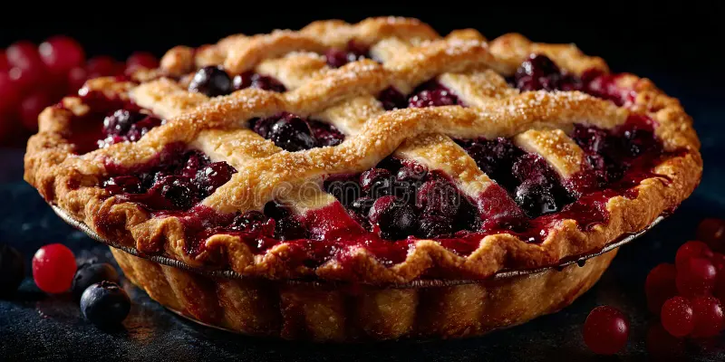

Цезар (Caesar) - це культовий алкогольний коктейль, який вважається неофіційним національним напоєм Канади. Винайдений в 1969 барменом Уолтером Шеллом в Калгарі, він щорічно споживається канадцями в обсязі більше 400 мільйонів порцій.

Цезар (Caesar) - це культовий алкогольний коктейль, який вважається неофіційним національним напоєм Канади. Винайдений в 1969 барменом Уолтером Шеллом в Калгарі, він щорічно споживається канадцями в обсязі більше 400 мільйонів порцій.
BeaverTails — канадська мережа ресторанів, якою керує BeaverTails Canada Inc. Мережа спеціалізується на випічці під назвою BeaverTails («боброві хвости») — це смажені тістечка, розтягнуті вручну, щоб нагадувати хвости бобра, з різними начинками, накладеними на випечене тісто.
Бобровий хвіст — це смажена випічка з тіста, яка продається з різними смаками. Більшість смаків BeaverTails доповнені згори солодкими приправами та кондитерськими виробами, такими як збиті вершки, скибочки банана, подрібнені печива Oreo, цукор з корицею та фундук з шоколадом.


Ягоду саскатун часто описують як солодкий і мигдальний смак, що робить її ідеальним кандидатом для ідеального пирога. Воістину, один шматочок цього пирога змінить ваше життя. Не дивно, що місто Саскатун було названо на честь цієї ягоди, а не навпаки.